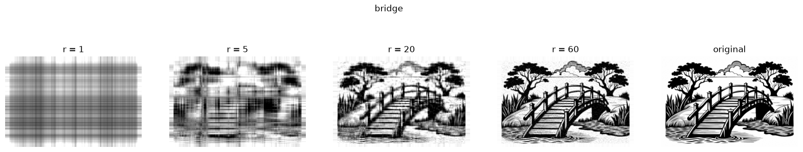
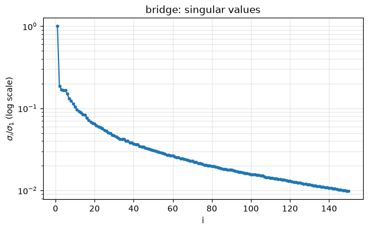
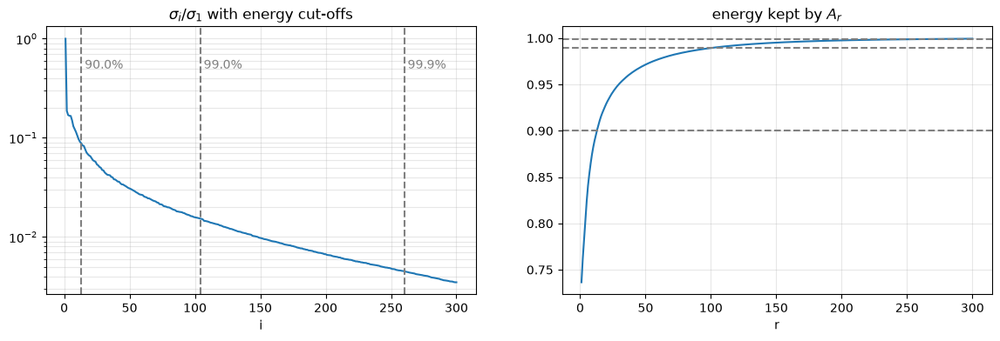
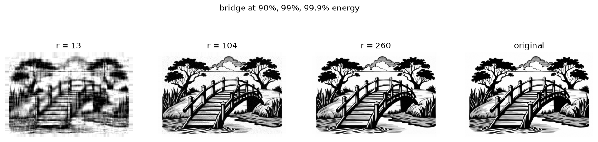
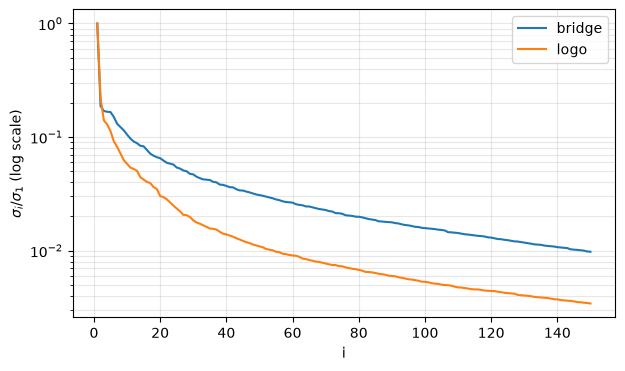
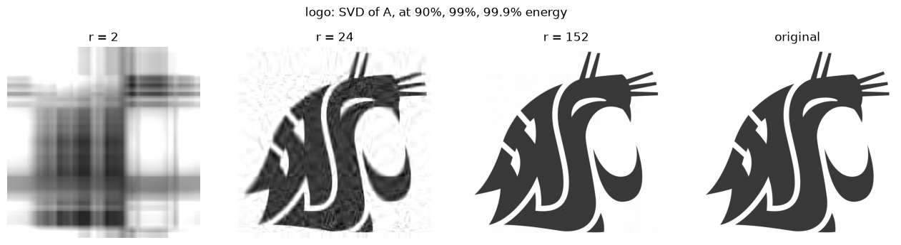
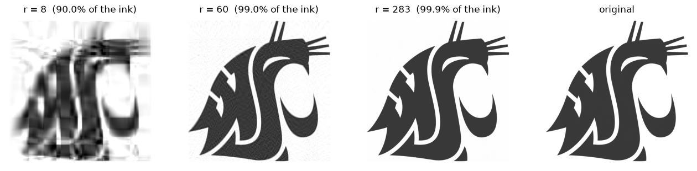

Image Compression with the SVD#
A grayscale image is just a matrix: an \(n\times k\) image is an \(n\times k\) matrix \(A\) whose entry \(a_{ij}\) is the brightness of pixel \((i, j)\), from \(0\) (black) to \(255\) (white). So everything we know about the SVD applies to pictures.
Files needed (put them in the same folder as this notebook):
image |
content |
size |
|---|---|---|
|
ink drawing, sharp black and white |
\(493\times 740\) |
|
flat dark shape on white |
\(1390\times 1393\) |
|
detailed engraving |
\(500\times 500\) |
|
photograph, smooth gray tones and fog |
\(1680\times 2100\) |
import numpy as np
import matplotlib.pyplot as plt
def load(name):
# plt.imread gives a 2-D array (0..255) for a grayscale JPG; convert to float for linear algebra
# and clip so every pixel is guaranteed to lie in 0..255
return np.clip(plt.imread(name).astype(float), 0, 255)
bridge = load("bridge.jpg")
print("bridge shape", bridge.shape, " min", bridge.min(), " max", bridge.max())
fig, ax = plt.subplots(figsize=(6, 4))
ax.imshow(bridge, cmap="gray", vmin=0, vmax=255)
ax.axis("off")
plt.show()
bridge shape (493, 740) min 0.0 max 255.0
Part 1. The SVD as a sum of rank-1 layers#
Write the reduced SVD \(A = U\Sigma V^T\) column by column. With \(\mathbf{u}_i\) the columns of \(U\) and \(\mathbf{v}_i\) the columns of \(V\): $\( A = \sigma_1 \mathbf{u}_1\mathbf{v}_1^T + \sigma_2 \mathbf{u}_2\mathbf{v}_2^T + \dots + \sigma_m \mathbf{u}_m\mathbf{v}_m^T, \qquad m = \min(n, k). \)\( Each \)\mathbf{u}_i\mathbf{v}_i^T\( is an \)n\times k\( matrix of **rank 1** (every row is a multiple of \)\mathbf{v}_i^T\(). The \)\sigma_i$ are sorted largest first, so the first layers carry the most of the picture.
Compression idea: keep only the first \(r\) layers, $\( A_r = \sum_{i=1}^{r} \sigma_i \mathbf{u}_i\mathbf{v}_i^T = \underset{n\times r}{U_r}\ \underset{r\times r}{\Sigma_r}\ \underset{r\times k}{V_r^T}. \)\( **Why this is a good idea:** the layers are sorted by \)\sigma_i\(, which measures how much each layer contributes. Keeping the first \)r\( layers keeps the biggest contributions and throws away only the smallest ones, so the picture changes as little as possible. As \)r\( grows, \)A_r\( gets closer to \)A\(; at \)r = \text{rank}(A)\( it is exactly \)A$.
In NumPy, \(U_r\) is U[:, :r], \(\Sigma_r\) is np.diag(s[:r]), and \(V_r^T\) is Vt[:r, :]. Always use full_matrices=False: for a \(1680\times 2100\) photo the full \(U\) and \(V\) would be \(1680\times1680\) and \(2100\times2100\), and we never need the extra columns.
U, s, Vt = np.linalg.svd(bridge, full_matrices=False)
print("shapes: U", U.shape, " s", s.shape, " Vt", Vt.shape)
print("largest singular values:", np.round(s[:5]))
def rank_r(U, s, Vt, r):
# A_r = U_r Sigma_r V_r^T
return U[:, :r] @ np.diag(s[:r]) @ Vt[:r, :]
def show_ranks(A, U, s, Vt, ranks, title=""):
# rank-r approximations side by side, then the original
fig, axes = plt.subplots(1, len(ranks) + 1, figsize=(4 * (len(ranks) + 1), 3.5))
for j, r in enumerate(ranks):
axes[j].imshow(rank_r(U, s, Vt, r), cmap="gray", vmin=0, vmax=255)
axes[j].set_title(f"r = {r}"); axes[j].axis("off")
axes[-1].imshow(A, cmap="gray", vmin=0, vmax=255)
axes[-1].set_title("original"); axes[-1].axis("off")
fig.suptitle(title, y=1.04)
plt.show()
show_ranks(bridge, U, s, Vt, [1, 5, 20, 60], "bridge")
shapes: U (493, 493) s (493,) Vt (493, 740)
largest singular values: [99953. 18704. 16950. 16690. 16603.]

Part 2. How much do we save, and how much do we lose?#
Storage. The original needs \(nk\) numbers. \(A_r\) only needs \(U_r\), the \(r\) values \(\sigma_i\), and \(V_r\): $\( \text{storage}(A_r) = nr + r + rk = r(n + k + 1), \qquad \text{compression ratio} = \frac{nk}{r(n+k+1)}. \)\( So compression only pays off when \)r\( is below the **break-even rank** \)\dfrac{nk}{n+k+1}$.
Error. Measure it with the Frobenius norm \(\|A\|_F = \sqrt{\sum_{i,j} a_{ij}^2}\) (np.linalg.norm(A)). Because \(U\) and \(V\) are orthogonal, \(\|A\|_F^2 = \sigma_1^2 + \dots + \sigma_m^2\), and the error is exactly the part we dropped:
$\( \frac{\|A - A_r\|_F}{\|A\|_F} = \sqrt{\frac{\sigma_{r+1}^2 + \dots + \sigma_m^2}{\sigma_1^2 + \dots + \sigma_m^2}}. \)\(
The fraction \)\dfrac{\sigma_1^2 + \dots + \sigma_r^2}{\sum_i \sigma_i^2}\( is called the **energy** kept by \)A_r\(. We can read off the error **from `s` alone**, without building \)A_r$.
Energy is the number to watch. Energy kept \(= 1 -\) (relative error)\(^2\): \(99\%\) energy means a relative error of \(10\%\). In Part 3 we use energy levels to choose \(r\).
n, k = bridge.shape
energy = np.cumsum(s**2) / np.sum(s**2) # energy[r-1] = energy kept by A_r
print(" r ratio rel. error (direct) rel. error (from s)")
for r in [5, 20, 60, 150]:
Ar = rank_r(U, s, Vt, r)
direct = np.linalg.norm(bridge - Ar) / np.linalg.norm(bridge)
from_s = np.sqrt(1 - energy[r - 1])
ratio = n * k / (r * (n + k + 1))
print(f"{r:4d} {ratio:5.1f}x {direct:.4f} {from_s:.4f}")
print("\nbreak-even rank nk/(n+k+1) =", round(n * k / (n + k + 1)))
r ratio rel. error (direct) rel. error (from s)
5 59.1x 0.4192 0.4192
20 14.8x 0.2657 0.2657
60 4.9x 0.1505 0.1505
150 2.0x 0.0690 0.0690
break-even rank nk/(n+k+1) = 296
Part 3. Choosing \(r\): reading the singular value plot#
There is no single “correct” \(r\). It depends on what the picture is for. But the plot of \(\sigma_i\) on a log scale tells you a lot. Plot \(\sigma_i / \sigma_1\) (so the first value is \(1\) and different images can be compared).
Practical tip: plot only the first \(150\) or so values. Drawings with blank borders have their last singular values at round-off level (\(10^{-13}\) and smaller). Plotting all of them squashes the interesting part of the curve.
fig, ax = plt.subplots(figsize=(7, 4))
ax.semilogy(np.arange(1, 151), s[:150] / s[0], ".-")
ax.set_xlabel("i"); ax.set_ylabel(r"$\sigma_i / \sigma_1$ (log scale)")
ax.set_title("bridge: singular values")
ax.grid(True, which="both", alpha=0.3)
plt.show()
print("sigma_i / sigma_1 for i = 1..8:", np.round(s[:8] / s[0], 3))

sigma_i / sigma_1 for i = 1..8: [1. 0.187 0.17 0.167 0.166 0.15 0.131 0.123]
How to read the curve. It has three zones:
zone |
what you see in the plot |
what those layers add to the picture |
|---|---|---|
head |
the first few \(\sigma\)’s, falling steeply |
overall brightness and the big shapes |
elbow (or knee) |
where the steep fall bends into a slow decline |
after this point, the picture is recognizable |
tail |
long, slowly falling part |
edges, fine texture, and noise |
\(\sigma_1\) is always far ahead. Layer 1 is roughly the average brightness pattern (look at \(r = 1\) in Part 1).
The elbow is the smallest sensible \(r\). Cutting before it loses whole shapes. Cutting right at it gives a rough but recognizable picture.
The tail decides the price of quality. A tail that drops fast means a few extra layers give a sharp picture: great compression. A flat, heavy tail (like the bridge’s) means detail is spread over hundreds of layers. Sharp edges and fine lines are expensive.
Energy thresholds turn this into numbers. The most common choices are \(90\%\) (rough), \(99\%\) (good), and \(99.9\%\) (hard to tell from the original). Always check \(r\) is well below the break-even rank.
Then look! The final judge is your eye: show \(A_r\) next to the original, and zoom in on fine detail.
Now mark the energy thresholds on the curve and look at the pictures:
def r_for_energy(s, level):
# smallest r with energy >= level. argmax returns the FIRST index where the condition is True;
# + 1 because Python counts from 0 but r counts layers from 1.
energy = np.cumsum(s**2) / np.sum(s**2)
return int(np.argmax(energy >= level)) + 1
levels = [0.90, 0.99, 0.999]
r_marks = [r_for_energy(s, lev) for lev in levels]
print("r for 90%, 99%, 99.9% energy:", r_marks, " break-even:", round(n * k / (n + k + 1)))
fig, axes = plt.subplots(1, 2, figsize=(14, 4))
axes[0].semilogy(np.arange(1, 301), s[:300] / s[0])
axes[1].plot(np.arange(1, 301), energy[:300])
for lev, r in zip(levels, r_marks):
axes[0].axvline(r, ls="--", color="gray")
axes[0].text(r, 0.5, f" {lev:.1%}", color="gray")
axes[1].axhline(lev, ls="--", color="gray")
axes[0].set_title(r"$\sigma_i / \sigma_1$ with energy cut-offs"); axes[0].set_xlabel("i")
axes[1].set_title("energy kept by $A_r$"); axes[1].set_xlabel("r")
axes[0].grid(True, which="both", alpha=0.3)
axes[1].grid(True, which="both", alpha=0.3)
plt.show()
show_ranks(bridge, U, s, Vt, r_marks, "bridge at 90%, 99%, 99.9% energy")
r for 90%, 99%, 99.9% energy: [13, 104, 260] break-even: 296


Bridge verdict. At \(90\%\) (\(r = 13\)) the picture is a blurry outline; at \(99\%\) (\(r = 104\)) it looks good but the ratio is only about \(3\times\). The heavy tail of a black-and-white line drawing makes it a hard image for the SVD.
Part 4. A second example: the logo (energy of the ink)#
The logo is a simple shape: one flat dark color on white, with smooth edges and no texture. It compresses very well. But it also shows a trap: when most of the picture is white background, the energy of \(A\) is misleading, and we should measure the energy of the ink, \(255 - A\), instead.
Load the logo and look at it:
logo = load("logo.jpg")
print("logo shape", logo.shape, " min", logo.min(), " max", logo.max())
print("fraction of white background (pixels > 240):", round(np.mean(logo > 240), 2))
fig, ax = plt.subplots(figsize=(4, 4))
ax.imshow(logo, cmap="gray", vmin=0, vmax=255)
ax.axis("off")
plt.show()
logo shape (1390, 1393) min 49.0 max 255.0
fraction of white background (pixels > 240): 0.63
First compare its singular values with the bridge’s on one plot.
Ul, sl, Vtl = np.linalg.svd(logo, full_matrices=False)
fig, ax = plt.subplots(figsize=(7, 4))
ax.semilogy(np.arange(1, 151), s[:150] / s[0], label="bridge")
ax.semilogy(np.arange(1, 151), sl[:150] / sl[0], label="logo")
ax.set_xlabel("i"); ax.set_ylabel(r"$\sigma_i / \sigma_1$ (log scale)")
ax.legend(); ax.grid(True, which="both", alpha=0.3)
plt.show()
print("logo: r for 90%, 99%, 99.9% energy:", [r_for_energy(sl, lev) for lev in levels])

logo: r for 90%, 99%, 99.9% energy: [2, 24, 152]
The head and elbow look much like the bridge’s, but the logo’s tail falls about \(3\times\) lower: once the big shapes are in, there is very little fine detail left. So \(99\%\) energy needs only \(r = 24\) (bridge: \(104\)), on an image with over \(5\times\) as many pixels.
But be careful with the \(90\%\) level: it says \(r = 2\). Look at \(A_2\) below: it is only a blur of stripes.
About \(63\%\) of the logo is white background (\(255\)), so the energy \(\sum a_{ij}^2\) is mostly background. The first layers get the background right and already collect most of the energy, before the shape appears. Energy percentages are too optimistic for images with a large white background.
Fix: measure the ink, not the paper. Compress \(B = 255 - A\) (white becomes \(0\), the shape becomes positive), then turn back with \(A \approx 255 - B_r\). Now the energy only counts the shape, and the \(r\) values are more honest.
show_ranks(logo, Ul, sl, Vtl, [r_for_energy(sl, lev) for lev in levels], "logo: SVD of A, at 90%, 99%, 99.9% energy")
B = 255 - logo # ink, not paper
Ub, sb, Vtb = np.linalg.svd(B, full_matrices=False)
rb = [r_for_energy(sb, lev) for lev in levels]
print("255 - logo: r for 90%, 99%, 99.9% energy:", rb)
fig, axes = plt.subplots(1, 4, figsize=(16, 3.5))
for j, r in enumerate(rb):
axes[j].imshow(255 - rank_r(Ub, sb, Vtb, r), cmap="gray", vmin=0, vmax=255)
axes[j].set_title(f"r = {r} ({levels[j]:.1%} of the ink)"); axes[j].axis("off")
axes[-1].imshow(logo, cmap="gray", vmin=0, vmax=255); axes[-1].set_title("original"); axes[-1].axis("off")
plt.show()
n, k = logo.shape
r99 = r_for_energy(sl, 0.99)
print("compression ratio at 99% energy of A: r =", r99, " ", round(n * k / (r99 * (n + k + 1)), 1), "x")
print("compression ratio at 99% energy of the ink: r =", rb[1], " ", round(n * k / (rb[1] * (n + k + 1)), 1), "x")

255 - logo: r for 90%, 99%, 99.9% energy: [8, 60, 283]

compression ratio at 99% energy of A: r = 24 29.0 x
compression ratio at 99% energy of the ink: r = 60 11.6 x
Lessons from the logo:
Flat regions and smooth edges compress very well: about \(29\times\) at \(99\%\) energy. The shape is clear, with some ripples near the edges; at \(99.9\%\) (\(r = 152\)) it is hard to tell from the original.
A large white background inflates \(\sigma_1\) and the energy, so a low threshold like \(90\%\) can point to a useless \(r\). Measuring \(255 - A\) (the ink) gives a stricter, more honest \(r\).
Summary#
quantity |
formula |
NumPy |
|---|---|---|
reduced SVD |
\(A = U\Sigma V^T\) |
|
rank-\(r\) approximation |
\(A_r = U_r\Sigma_rV_r^T\) |
|
storage of \(A_r\) |
\(r(n+k+1)\) |
|
break-even rank |
\(nk/(n+k+1)\) |
|
energy kept by \(A_r\) |
\(\sum_{i\le r}\sigma_i^2 / \sum_i \sigma_i^2\) |
|
ink (large white background) |
\(B = 255 - A\), compress \(B\), then \(A \approx 255 - B_r\) |
|
energy of the ink |
same formula, with the \(\sigma_i\) of \(B\) |
|
relative error |
\(\sqrt{1 - \text{energy}}\) |
|
smallest \(r\) for an energy level |
|
Choosing \(r\), step by step: (1) plot \(\sigma_i/\sigma_1\) with ax.semilogy, first \(\sim 150\) values; (2) find the elbow, the smallest sensible \(r\); (3) compute \(r\) for \(90\%\), \(99\%\), \(99.9\%\) energy, on \(255 - A\) if there is a big white background; (4) check against the break-even rank; (5) look at the pictures and decide.
Exercises#
Syntax you will need:
task |
NumPy / Matplotlib |
|---|---|
read a grayscale image as a float matrix (clipped to \(0..255\)) |
|
shape \(n\times k\) |
|
reduced SVD |
|
first \(r\) columns of \(U\) / first \(r\) rows of \(V^T\) |
|
first \(r\) singular values / as a diagonal matrix |
|
matrix product |
|
numbers \(1, 2, \dots, 150\) |
|
one plot |
|
a row of \(4\) plots |
|
log-scale plot (with a label for the legend) |
|
show an image in panel |
|
title, axis label (one plot) |
|
title of panel |
|
legend, grid (one plot) |
|
hide the axes of panel |
|
draw the figure |
|
Exercise 1 (tree).
(a) Read tree.jpg into a matrix \(A\). What is its size \(n\times k\)?
(b) Compute the reduced SVD of \(A\). Give the shapes of U, s, Vt.
(c) Plot \(\sigma_i / \sigma_1\) for \(i = 1, \dots, 150\) with ax.semilogy. Where is the elbow, roughly?
(d) Compute \(A_r = U_r\Sigma_rV_r^T\) for \(r = 10, 40, 100\). Show them in one row of \(4\) panels: the three approximations and the original.
(e) Which \(r\) looks good enough to you? Try other values if needed. For your \(r\), compute the compression ratio \(\dfrac{nk}{r(n+k+1)}\).
# Exercise 1
Exercise 2 (rocks).
(a)–(e) Repeat Exercise 1 for rocks.jpg. (It is large: the SVD takes a few seconds, so compute it only once.)
(f) Plot the two curves \(\sigma_i / \sigma_1\) (tree and rocks) on one ax.semilogy plot. Which image needs a smaller \(r\) to look good? Explain using what the images look like (smooth tones vs. sharp edges and fine detail).
# Exercise 2